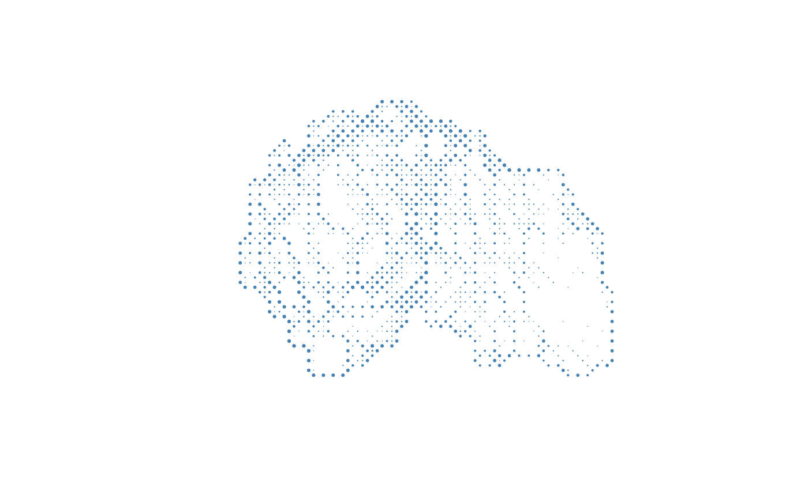
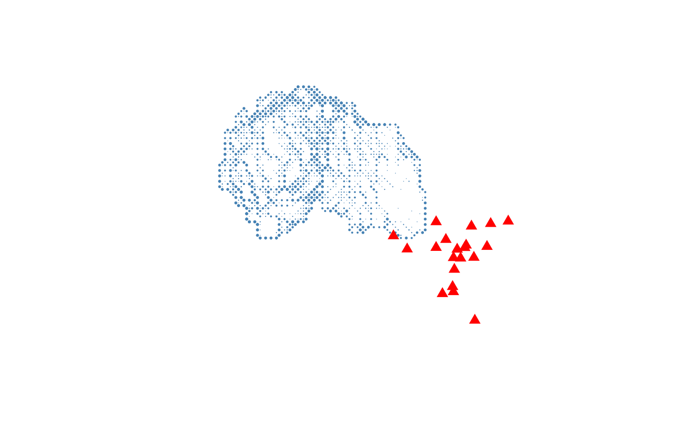

Render one or more meshes as an orthographic dot cloud in base R
Source:R/plot-mesh-dotcloud.R
plot_mesh_dotcloud.RdProjects mesh vertices onto a 2D plane using an orthographic camera defined
by an eye position, a look-at point, and an up direction, then draws the
projected dots with base-R plot. Each dot is
rendered opaque, but its cex is modulated by a rim-light weight
\(1 - |n \cdot z_{cam}|\): front- and back-facing vertices shrink toward
zero size, while grazing-edge vertices keep their full size. This
size-modulated trick gives a rim-light look without paying R's per-point
transparency-blending cost.
Multiple meshes share a single depth space: all vertices are projected
together and sorted globally by depth before a single plot() call,
so the painter's algorithm works correctly across meshes. Meshes without
faces (point clouds) are rendered at full size and are not affected
by the side filter.
Usage
plot_mesh_dotcloud(
mesh,
eye = c(0, 0, 1000),
lookat = c(0, 0, 0),
up = c(0, 1, 0),
col = c("white", "gray30"),
pch = 16L,
cex = 0.1,
add = FALSE,
axes = FALSE,
asp = 1,
xlim = NULL,
ylim = NULL,
xlab = "",
ylab = "",
normal_weight = c("auto", "area", "angle"),
side = c("both", "front", "back"),
mesh_clipping = 0.3,
alpha = 1,
...
)Arguments
- mesh
a
'mesh3d'object, or a list of'mesh3d'objects. Meshes without a face matrix ($it) are treated as point clouds. Ifmesh$normalsis absent and the mesh has faces, normals are recomputed withvcg_update_normals.- eye
numeric vector of length 3 - camera position in world space.
- lookat
numeric vector of length 3 - the world-space point the camera is looking at.
- up
numeric vector of length 3 - a world-space vector indicating which direction is "up" for the camera; defaults to
c(0, 1, 0).- col
base color(s) for the dots. Accepted forms:
A single color string - applied to all meshes.
A character vector of length 2 or more (not matching any vertex count) - used as a depth-ordered color gradient applied to all meshes.
A character vector of length equal to the number of vertices in a single mesh - per-vertex colors for that mesh.
A list of length equal to the number of meshes - each element is one of the above, applied to the corresponding mesh.
Default
"gray30".- pch
point character; a scalar or vector/list with one value per mesh, recycled as necessary. Default
16L.- cex
point expansion factor; a scalar or vector/list with one value per mesh, recycled as necessary. Default
0.1.- add
logical; if
TRUEthe dots are added to an existing plot instead of opening a new one. DefaultFALSE.- axes
logical; whether to draw axes on a new plot. Ignored when
add = TRUE. DefaultFALSE.- asp
aspect ratio of the new plot; default
1(equal scaling). Ignored whenadd = TRUE.- xlim, ylim
axis limits for the new plot;
NULL(default) lets R choose automatically from all meshes' projected vertices. Ignored whenadd = TRUE.- xlab, ylab
axis labels for the new plot. Ignored when
add = TRUE.- normal_weight
passed to
vcg_update_normalswhen normals must be recomputed; one of"auto"(area if no normals present, otherwise skip),"area", or"angle". Default"auto".- side
which side of meshed surfaces to render. One of
"both"(default, renders all vertices),"front", or"back". Point clouds are always rendered regardless of this setting.- mesh_clipping
numeric in
[0, 1]controlling how much of the surface is peeled away from the camera-facing direction. Vertices whose rim-light weight (\(1 - |n \cdot z_{cam}|\)) is at or below this threshold are dropped, leaving only the silhouette/grazing band. Surviving vertices are drawn opaque, and theircexis multiplied by the rim-light weight so grazing-edge dots appear larger than near-front-facing dots. Drawing opaque points with size-modulated weight is dramatically faster than R's true per-point transparency. Default0.3.- alpha
numeric in
[0, 1]; one value per mesh (recycled), sets the transparency of each mesh (1= fully opaque,0= fully transparent). Vertices belonging to a mesh withalpha = 0are dropped entirely. Default1.- ...
additional graphical parameters forwarded to
plot.default(new plot) orpoints(whenadd = TRUE).
Examples
mesh <- vcg_isosurface(left_hippocampus_mask)
# Side view - rim-light shows the outline of the hippocampus
plot_mesh_dotcloud(
mesh,
eye = c(150, 0, 0),
lookat = c(0, 0, 0),
up = c(0, 0, 1),
col = "steelblue",
cex = 0.4
)

# Two meshes: surface + electrode point cloud
n_elec <- 20
electrodes <- structure(
list(vb = matrix(rnorm(3 * n_elec, sd = 5), 3, n_elec)),
class = "mesh3d"
)
plot_mesh_dotcloud(
mesh = list(mesh, electrodes),
eye = c(150, 0, 0),
lookat = c(0, 0, 0),
up = c(0, 0, 1),
col = list("steelblue", "red"),
pch = c(16L, 17L),
cex = c(0.4, 1.2)
)
